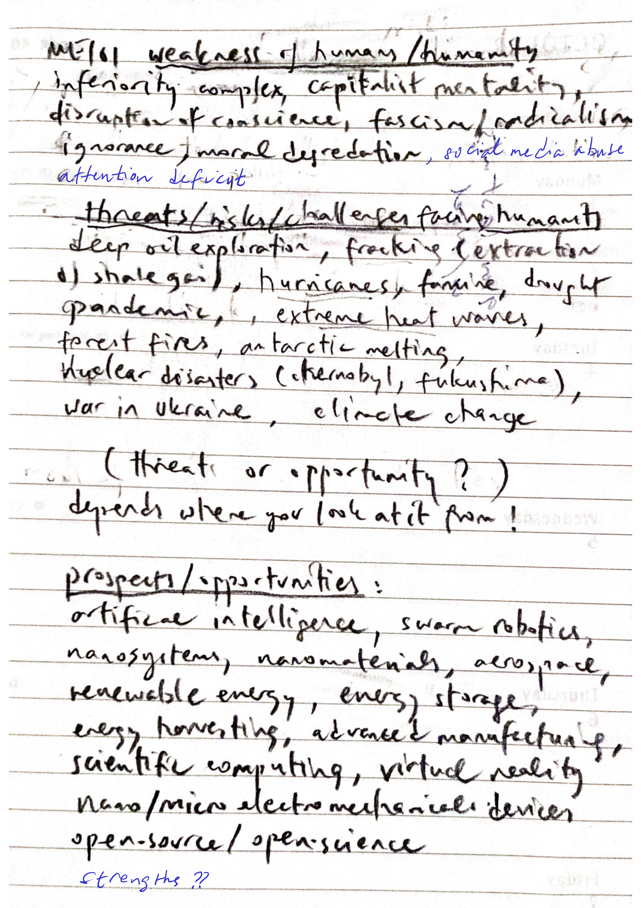
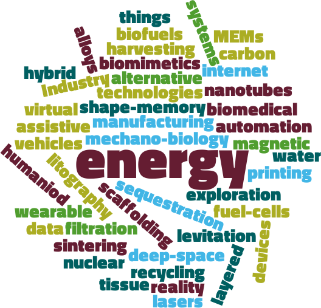

About the future, global issues, challenges on the one hand and opportunities, prospects on the other.

Use AI to describe the SWOT analysis. When, why, how is it useful? (Do not forget to provide the educational context while asking the question.)
Weakness-Imagined-Strength
Threat-Percieved-Opportunity
Focus: Future Prospects and Challenges
Swot Analysis of 2024 Fall
Swot Analysis of 2025 Fall
What is happening in mechanical engineering?

Find your previous group members; you will be working closely with your teammates throughout the activity.
Enter the text (maximum 600 words) in the appropriate space provided in the assignment: Classwork 2: Keyword Analysis for Next Session Ask AI: